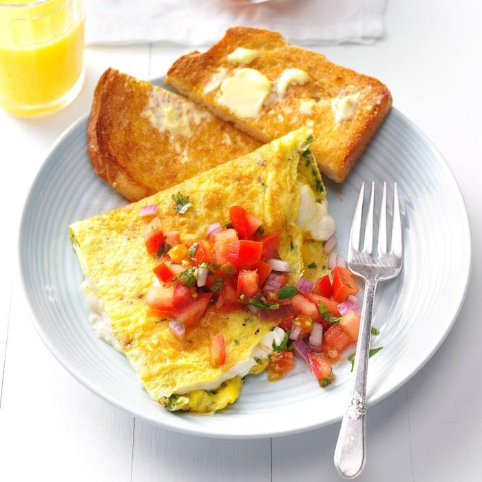
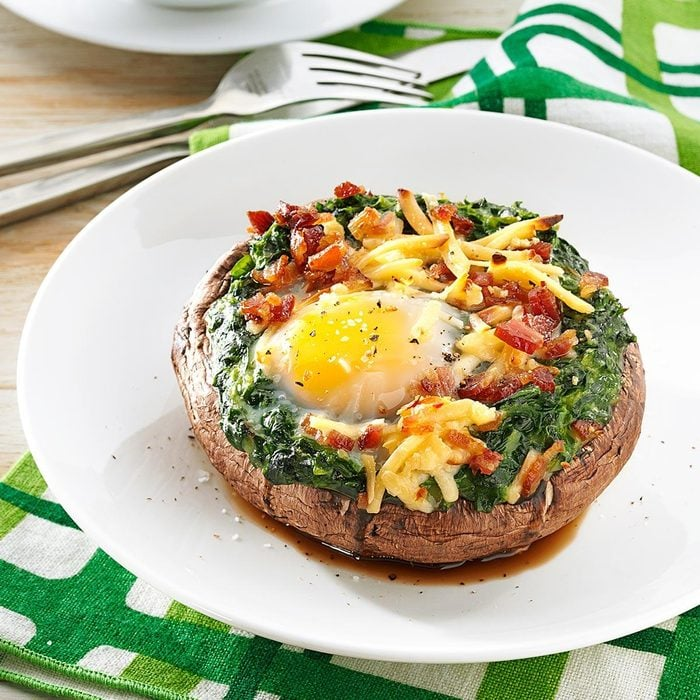
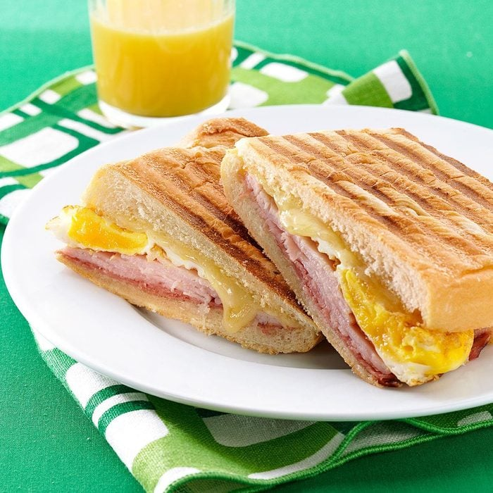

Breakfast Recipes
Rise and Dine, It is Breakfast Time!

Cream Cheese & Chive Omelet
If you like cream cheese then this creamy recipe is for you.
Cream cheese is mixed with herbs and melted in this cream cheese omelet, and it acquires a wonderful taste that you wouldn't associate with cream cheese.
Omelets are remarkably easy to prepare, and can provide a quick, yet impressive, dish that can be served at any meal period.
View Recipe

Brunch-Style Portobello Mushrooms
Stuffed mushrooms have never failed us and this breakfast version is no exception.
Portobello mushrooms are a large, meaty variety of mushrooms with a rich, savory flavor and dense, toothsome texture.
An easy low-carb breakfast that is filled with garlicky tomatoes and spinach, eggs, and cheese.
It's just the thing to get us out of bed in the morning.
View Recipe

Cuban Breakfast Sandwiches
This delicious sandwich is served warm and toasty!
The Cubano is the ultimate sandwich with the tangy and tart taste.
It is filled with eggs, ham, salami, and cheese and will definitely satisfy the biggest appetites.
Not only is this sandwich packed with flavor but it is also actually really easy to make!
View Recipe
Cream Cheese & Chive Omelet
If you like cream cheese then this creamy recipe is for you.
Cream cheese is mixed with herbs and melted in this cream cheese omelet, and it acquires a wonderful taste that you wouldn't associate with cream cheese.
Omelets are remarkably easy to prepare, and can provide a quick, yet impressive, dish that can be served at any meal period.
Prep/Total Time: 15 minutes for 2 servings
Ingredients
- 1 tablespoon olive oil
- 4 large eggs
- 2 tablespoons minced chives
- 1/8 teaspoon salt
- 1/8 teaspoon pepper
- 2 ounces cream cheese, cubed
- Salsa
- Optional bread
Instructions
- In a large nonstick skillet, heat oil over medium-high heat. Whisk the eggs, chives, water, salt and pepper.
Add egg mixture to skillet (mixture should set immediately at edges).
- As eggs set, push cooked edges toward the center, letting uncooked portion flow underneath.
When the eggs are set, sprinkle cream cheese on one side; fold other side over filling.
Slide omelet onto a plate; cut in half. Serve with salsa.
- Optional: toast some breads if you like and add butter on the top. Place them on the plate.
Brunch-Style Portobello Mushrooms
Stuffed mushrooms have never failed us and this breakfast version is no exception.
Portobello mushrooms are a large, meaty variety of mushrooms with a rich, savory flavor and dense, toothsome texture.
An easy low-carb breakfast that is filled with garlicky tomatoes and spinach, eggs, and cheese.
It's just the thing to get us out of bed in the morning.
Prep/Total Time: 30 minutes for 4 servings
Ingredients
- 4 large portobello mushrooms, stems removed
- 2 packages (10 ounces each) frozen creamed spinach, thawed
- 4 large eggs
- 1/4 cup shredded Gouda cheese
- 1/2 cup crumbled cooked bacon
- Salt and pepper, optional
Instructions
- Place mushrooms, stem side up, in an ungreased 15x10x1-in. baking pan.
Spoon spinach onto mushrooms, building up the sides.
Carefully crack an egg into the center of each mushroom; sprinkle with cheese and bacon.
- Bake at 375° for 18-20 minutes or until eggs are set.
Sprinkle with salt and pepper if desired.
Cuban Breakfast Sandwiches
This delicious sandwich is served warm and toasty!
The Cubano is the ultimate sandwich with the tangy and tart taste.
It is filled with eggs, ham, salami, and cheese and will definitely satisfy the biggest appetites.
Not only is this sandwich packed with flavor but it is also actually really easy to make!
Prep/Total Time: 20 minutes for 4 servings
Ingredients
- 1 loaf (1 pound) Cuban or French bread
- 4 large eggs
- 16 pieces thinly sliced hard salami
- 8 slices deli ham
- 8 slices cheese (any choice of cheese)
- Any choice of vegie
Instructions
- Split bread in half lengthwise; cut into 4 pieces.
In a large skillet coated with cooking spray, fry eggs until yolks are set.
- Layer bread bottoms with salami, ham, egg and cheese; replace tops.
Cook on a panini maker or indoor grill for 2 minutes or until bread is browned and cheese is melted.
- Add your choice of vegie (tomatoes, lecttuces, cucumbers, slice onions, ect)
Developer: Anh Vo